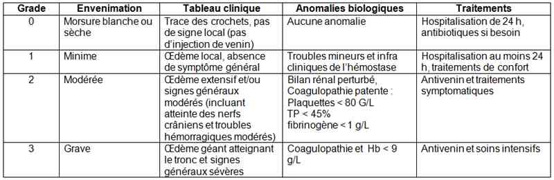

Bienvenue Sur Medical Education
Morsure : serpents exotiques
Spécialité : toxicologie /
Points importants
- Estimations récentes : environ 2 700 000 envenimations par serpents dans le monde chaque année, avec 140 000 décès (dont 110 000 pour l'Asie du sud, 25 000 pour l'Afrique et 3 000 pour l'Amérique Latine)
- La toxicité des serpents est variable selon l'espèce, voire peut même varier au sein d'une même espèce. Impossible de préciser la toxicité de toutes les espèces, mais on peut présenter des grandes lignes qui résument les différents tableaux cliniques
- Plusieurs espèces de serpents tropicaux sont bien plus toxiques que nos vipères locales. Le pronostic vital du patient peut être mis en jeu en quelques dizaines de minutes seulement (serpents neurotoxiques)
- Les serpents venimeux sont depuis le début des années 1990 considérés comme des nouveaux animaux de compagnie (les NAC) et sont donc impliqués dans des envenimations concernant des éleveurs ou leur famille en France métropolitaine
- Les antivenins étrangers ne sont que très peu disponibles en France métropolitaine, ce qui complique la prise en charge de patients envenimés par les NAC. Lorsqu'un antivenin adéquat est retrouvé dans une autre région de France, voire à l'étranger, le coût du transport de l'antivenin vers l'hôpital où se trouve la victime est extrêmement élevé
-
En outremer, La Guyane et la Martinique sont concernées par des serpents venimeux terrestres. En Nouvelle Calédonie et en Polynésie, les envenimations par serpents marins sont exceptionnelles. Il n'y a pas de risque d'envenimation ophidienne en Guadeloupe, à la Réunion et à Mayotte
Présentation clinique / CIMU
SIGNES FONCTIONNELS
Signes locaux
- Pour les serpents possédant un venin riche en enzymes (crotalinés et vipérinés), la morsure avec injection de venin est caractérisée par une douleur intense et immédiate et un œdème local se développant en quelques minutes. Œdème extensif voire compressif, lymphangite, adénopathie, nécrose, phlyctènes sont les témoins d'une diffusion du venin
- Pour les serpents possédant un venin pauvre en enzymes (élapidés et serpents marins), les signes locaux sont minimes ou modérés : faible douleur de la zone mordue, pas d'œdème
- L'absence de signe local est le plus souvent la conséquence d'une morsure blanche, mais elle peut être faussement rassurante car il est possible d'observer des envenimations neurotoxiques avec signes locaux quasi absents
Signes généraux
-
Pour les serpents possédant un venin riche en enzymes, les signes généraux sont présents lorsque le venin diffuse :
- signes digestifs : nausées, vomissements, douleurs abdominales, diarrhée
- signes cardiovasculaires : HoTA (crotalinés +++) pouvant aller jusqu'au choc
- signes respiratoires : œdème lésionnel pulmonaire, épanchements pleuraux (vipérinés +++)
- conséquences du syndrome hémorragique : hémorragies diffuses, purpura, troubles neurologiques lors d'hémorragies méningées ou ventriculaires
- défaillance multiviscérale
-
Pour les serpents possédant un venin riche en toxines (élapidés, serpents marins, quelques crotales et vipères) :
-
signes neurologiques (syndrome cobraïque) :
- dans un premier temps, paresthésies et dysesthésies locales, atteinte des nerfs crâniens avec ptosis bilatéral, diplopie, ophtalmoplégie, paralysie de l'orbiculaire des lèvres, dysgueusie ; une somnolence est possible à ce stade
- des signes laissent présager une aggravation : dysphonie, dysarthrie, dysphagie
- les troubles moteurs sont le stade ultime : aréflexie puis paralysie ascendante pouvant aboutir plus ou moins rapidement à un arrêt respiratoire par paralysie diaphragmatique
- signes cardiaques : pour quelques espèces de cobras et pour les vipères fouisseuses du genre Atractaspis, il existe une toxicité cardiaque directe à l'origine d'un tableau d'ischémie myocardique et de troubles de la conduction cardiaque aboutissant à une asystolie moins d'une heure après l'injection de venin
-
signes neurologiques (syndrome cobraïque) :
-
Cas particulier des projections oculaires de venin :
- il existe plusieurs espèces de cobras cracheurs africains (Naja nigricollis, Naja mossambica et Hemachatus heamachatus)
- ces projections ne génèrent que des lésions locales (douleur intense, blépharospasme, conjonctivite voire kératite) qui doivent être traitées de façon symptomatique
- les cas de trouble systémique lors de telles atteintes oculaires sont exceptionnels et anecdotiques
CONTEXTE
Terrain
- Plus le poids de la victime est bas, plus le risque d'envenimation grave est élevé. Les enfants doivent donc être considérés comme une population à risque
Antécédents
- Tout ATCD susceptible de compliquer la prise en charge ou de favoriser les complications est un facteur de mauvais pronostic
Circonstances
- Dans les pays d'origine, 75% des envenimations surviennent lors d'activités agricoles et le serpent responsable n'est pas toujours vu, et l'identification de l'espèce est souvent impossible : c'est alors le tableau clinique qui prime
- En Europe, les envenimations d'éleveurs amateurs surviennent principalement lors du nourrissage ou lors de manipulation ; des personnes exposées professionnellement peuvent être victimes soit lorsque le contact quotidien aboutit à une banalisation et donc à une baisse de la vigilance, soit lorsqu'il s'agit de personnes mal formées (vendeurs en animalerie tout particulièrement concernés dans les séries publiées en Amérique du Nord et en Europe)
- Lors de morsure de serpent exotique en Europe, le nom précis de l'espèce est généralement connu par l'éleveur et le risque est alors plus facile à évaluer avec l'aide d'un centre antipoison
EXAMEN CLINIQUE
La gradation doit être effectuée dès la prise en charge médicale (attention : le tableau de gradation des envenimations ophidiennes en général est plus complexe que celui utilisé pour les envenimations vipérines en France)
-
Signes locaux limités à des traces de crochet : Grade 0 :
- avec les serpents élapidés et les serpents marins, il est possible d'observer un passage brutal d'un grade 0 vers un grade 2
-
Signes locaux sans signe général : Grade 1 :
- douleur immédiate et vive, œdème local non extensif et non compressif
-
Signes locorégionaux : Grade 2 ou Grade 3 :
- le pourcentage de patients en Grades 2 ou 3 varie selon les espèces, avec pour certains élapidés asiatiques plus de 50% des cas
-
œdème extensif :
- œdème atteignant le segment supérieur du membre mordu
- l'utilisation d'une marque au stylo feutre permet de vérifier la vitesse d'extension
- un œdème atteignant le tronc ou le segment céphalique implique une gradation au niveau 3
- paresthésies et dysesthésies locales possibles en cas de neurotoxicité
- saignement modéré au niveau de la morsure, témoin des premiers troubles de la coagulation
- adénopathie et lymphangite remontant à la racine du membre sont des témoins de la diffusion du venin
- nécrose et phlyctènes sont possibles au grade 3
-
Signes généraux : Grade 2 ou 3 :
- nausées, vomissements, douleur digestive, diarrhée
- HoTA, sensation de malaise, angoisse
- atteinte des nerfs faciaux au Grade 2, paralysie ascendante au Grade 3
-
hémorragies diffuses :
- hématurie et gingivorragie au Grade 2
- épistaxis, hémoptysie, hématémèse, rectorragies au Grade 3
- œdème pulmonaire lésionnel au grade 3
CIMU
-
Tri 1 à 3
Signes paracliniques
BIOLOGIQUE
- NFS : hyperleucocytose, thrombopénie, hémolyse
-
Troubles de l'hémostase fréquents (crotalinés, vipérinés et élapidés océaniens). Plaquettes, taux de prothrombine, fibrinogène, produits de dégradation de la fibrine :
- troubles mineurs infracliniques au Grade 1 : plaquettes entre 80 et 150 giga/L, TP entre 45% et 70%, fibrinogène entre 1 et 2 g/L
- coagulopathie patente avec syndrome hémorragique au Grade 2 : plaquettes < 80 giga/L, TP < 45%, fibrinogène < 1 g/L
- coagulopathie et hémoglobine < 9 g/L au Grade 3
- Bilan de la fonction rénale (créatininémie, hématurie, protéinurie). Bilan rénal perturbé dès les Grades 2 avec de nombreuses espèces. Insuffisance rénale (créatininémie > 120 µmol/L) au Grade 3
- Ionogramme sanguin : perturbations importantes en cas de formation d'un troisième secteur (Grade 3)
IMAGERIE
- Radiographie du thorax : œdème pulmonaire lésionnel au grade 3
-
Echo-doppler des vaisseaux du membre mordu : possibilité d'œdème compressif avec de nombreuses espèces de crotalinés américains
Diagnostic étiologique
MORSURE PAR UN NOUVEL ANIMAL DE COMPAGNIE
-
La victime connaît le plus souvent le nom scientifique du serpent responsable :
- les noms vernaculaires n'ont aucun intérêt et ne permettent généralement pas l'identification (une même espèce peut avoir des dizaines de noms usuels dans le même pays et, a contrario, un seul nom usuel peut correspondre à plusieurs espèces aux toxicités souvent sans rapport...)
- La toxicité du serpent impliqué et identifié doit être vérifiée auprès d'un centre antipoison
- De nombreux serpents élevés ne sont pas venimeux (plusieurs espèces de couleuvres inoffensives, boas et pythons), ces morsures ne représentent aucun danger toxique, mais les conséquences infectieuses et traumatiques peuvent être redoutables
Diagnostic différentiel
MORSURE PAR UN AUTRE ANIMAL
- Il paraît totalement improbable d'être confronté à une morsure de serpent exotique dans la nature en France métropolitaine
- Les rumeurs de serpents voyageant dans les régimes de bananes ou s'étant échappés de leur élevage sont toujours erronées
- Les serpents sont des vertébrés spécialisés qui s'adaptent mal aux variations environnementales, ce qui explique que ces reptiles ne voyagent pas avec les marchandises et ne survivent en Europe que quelques heures en dehors d'un vivarium
- Le tableau clinique d'une morsure d'araignée ou d'une piqûre de scorpion est bien différent et le contexte permet toujours de bien distinguer les envenimations ophidiennes des aranéismes ou des scorpionismes
AUTRES CONTEXTES
-
Le contexte aigu permet toujours d'écarter un problème infectieux (érysipèle, gangrène...)
Traitement
SUR LE LIEU DE LA MORSURE
- Mettre la victime au repos. Toute activité motrice est susceptible de favoriser la diffusion du venin
- Avertir les secours. En cas d'éloignement de tout moyen de communication, la victime peut être transportée s'il s'agit d'un enfant, mais peut être aussi laissée sur place avec une tierce personne
- Enlever tous les garrots potentiels (montres, bracelets) et si possible désinfecter et glacer la plaie
- Un bandage non serré peut être posé de la racine du membre vers la périphérie afin de ralentir la diffusion lymphatique du venin. Il faut toujours pouvoir passer un doigt entre la peau et la bande. Si l'on pense que cette manœuvre risque d'être mal effectuée, il vaut mieux ne pas la préconiser plutôt que risquer de réaliser un garrot
-
Ce qu'il ne faut pas faire :
- gêner la vascularisation avec un garrot ou un tourniquet
- favoriser la diffusion du venin (boissons tachycardisantes tels le thé ou le café, gestes d'un autre temps à type d'incision, d'aspiration ou de cautérisation)
- injecter un antivenin en dehors d'une structure hospitalière
- l'utilisation d'emblée d'héparine ou de ses dérivés semble aussi favoriser la diffusion du venin
-
Ce qui n'a pas d'intérêt :
- les corticoïdes n'apportent rien
- les systèmes d'aspiration type Aspivenin® sont incapables de retirer un venin injecté sous pression
LORS DU TRANSPORT VERS L'HOPITAL
- Le transport vers l'hôpital est systématique car en Europe et en Outremer, la gradation de l'envenimation doit être faite aux urgences
- Une vessie de glace améliore le confort du patient
- Une VVP doit être posée pour un éventuel remplissage en cas d'HoTA
- Antalgiques conseillés
A L'HOPITAL
Si le patient est en Grade 0, la conduite à tenir varie en fonction de l'espèce de serpent impliquée
- Pour les crotalinés et les vipérinés, une surveillance de 2 à 6 h peut être proposée. Il est improbable d'observer l'évolution d'un grade 0 vers un grade 1. Le patient doit être averti des risques infectieux
- Pour les élapidés et les serpents marins, il est possible d'observer un passage d'un Grade 0 vers un Grade 2 ou 3 (syndrome cobraïque brutal) dans les heures qui suivent la morsure. Le patient doit donc être hospitalisé 24 h
- En cas de doute sur la durée d'hospitalisation des patients en Grade 0 qui varie en fonction de l'espèce, demander l'avis d'un centre antipoison
Si le patient est en Grade 1, une hospitalisation de 24 h s'impose
- Du venin a été injecté, mais il est impossible de prévoir l'évolution à ce stade
-
Prescription de traitements symptomatiques :
- antalgiques
- vessie de glace
- membre surélevé et immobilisé
- antibiotiques si besoin
Si le patient arrive à l'hôpital en Grade 2 ou 3, ou s'il y a évolution lors de l'hospitalisation vers un grade 2 ou 3, le seul traitement efficace est l'antivenin
- Il faut insister sur le fait que les antivenins adéquats ne sont pas toujours disponibles en Europe
- De plus, pour plusieurs espèces venimeuses qui ne sont pas un problème de santé publique dans leur pays d'origine, il n'existe pas d'antivenin (cela ne signifie pas que la toxicité est faible)
SUIVI DU TRAITEMENT
- Antalgiques à répéter autant que besoin
-
La place des antibiotiques est sujette à discussion :
- si en milieu tropical les morsures de serpent s'infectent toujours, en Europe, les infections sont rares
- la prescription systématique d'antibiotique est donc abandonnée en France métropolitaine et il n'est conseillé de n'utiliser de tels médicaments qu'en cas d'infection patente
-
La chirurgie à type d'aponévrectomie de décharge est régulièrement nécessaire lors d'œdèmes compressifs majeurs et de phénomènes ischémiques fréquents avec les crotalinés américains :
- elle n'a plus sa place dans le traitement des œdèmes lors d'envenimations par vipérinés car il n'y a pas de véritable ischémie
- de plus, les antivenins permettent toujours avec les vipères une diminution de l'intensité de l'œdème
- L'héparine ou dérivés à bas poids moléculaire peuvent être prescrits en cas de décubitus prolongé ou lors de troubles majeurs de la coagulation avec phénomènes thrombotiques (crotalinés d'Amérique Latine du genre Bothrops)
MEDICAMENTS
- Antalgiques : paracétamol, antalgiques d'action centrale
- Antibiotiques : pénicillines M (l'oxacilline est la plus utilisée)
- Apport de facteurs de la coagulation possible après traitement par l'antidote. Ce traitement est considéré comme sans intérêt s'il est prescrit avant l'antivenin (consommation quasi instantanée par les enzymes circulantes du venin)
-
Antivenin :
- aucun antivenin étranger ne possède d'AMM en France : aucun de ces produits n'est donc considéré comme un médicament classique
- leur utilisation se fait donc sous l'entière responsabilité du prescripteur
- en cas de doute, un centre antipoison peut prendre une telle responsabilité et vous indiquer d'utiliser (ou de ne pas utiliser...) tel ou tel antivenin
- fragments plus ou moins purifiés d'anticorps de chevaux, de moutons ou de chèvres immunisés contre le venin des espèces de serpents impliqués dans une importante morbi-mortalité dans leurs pays d'origine
- utilisation par voie IV uniquement, la seule véritablement efficace
- la voie IM doit être abandonnée
- si la victime est une femme enceinte, l'antivenin est tout particulièrement indiqué à cause de la toxicité fœtale du venin
-
les quantités d'antivenin nécessaires ne dépendent pas de la victime mais du venin inoculé : les doses sont donc les mêmes si la victime est un enfant, seul varie le volume de sérum physiologique dans lequel l'antivenin est dilué
Surveillance
CLINIQUE
-
Grade 0 :
- en fonction de l'espèce, retour à domicile rapide (serpents possédant un venin riche en enzymes et pauvre en toxines)
- ou surveillance de 24 h (serpents neurotoxiques), antibiotiques si besoin
-
Grade 1 :
- après 24 h de surveillance à l'hôpital sans signe d'aggravation, transformation tardive en grade 2 improbable
- retour à domicile dès que possible avec prescriptions de traitement symptomatiques de confort (antalgiques, vessie de glace, antibiotiques si besoin)
-
Grade 2 ou 3 :
- si l'antivenin est disponible et a été utilisé, surveillance des symptômes d'allergie et si c'est le cas, traitement symptomatique
- le risque allergique est faible avec les antidotes purifiés fabriqués en Europe, en Amérique du nord ou en Australie, ce risque est, par contre, très important avec les antidotes de fabrication asiatique
- avertir le patient des risques de maladie sérique dans les jours qui suivent la perfusion ; en cas d'arthralgies, préconiser un retour à l'hôpital pour vérifier la fonction rénale
-
l'efficacité de l'antivenin est d'autant plus grande que le serpent qui a mordu est proche des serpents qui ont servi pour l'immunisation :
- en cas d'injection d'antivenin monovalent couvrant l'espèce en cause, cette efficacité peut être spectaculaire
- inversement, un antivenin fabriqué avec une espèce voisine peut s'avérer être sans grand intérêt
- pour les grades 3 avec lésions tissulaires installées, l'efficacité est moins rapide mais bien réelle ; cette notion explique qu'en cas de gradation au niveau 2, il faut injecter l'antivenin le plus vite possible et ne pas attendre une aggravation qui est le témoin de lésions tissulaires
BIOLOGIQUE
- Grade 0 : il n'y a pas d'anomalie biologique à ce stade
- Grade 1 : les perturbations biologiques sont par définition minimes et rentre dans l'ordre dans les 24 à 48 h après la morsure
-
Grade 2 et Grade 3 :
-
si l'antivenin a été utilisé, les anomalies biologiques doivent s'amender en quelques heures :
- une amélioration transitoire suivie d'une phase de nouvelles perturbations de l'hémostase implique que l'antivenin n'a pas été complètement efficace et qu'une seconde prescription doit être envisagée
- ceci est possible avec de nombreux antivenins au faible pouvoir de neutralisation car peu concentrés en fragments d'anticorps
-
si aucun antivenin n'est disponible, on ne peut avoir recours qu'à des traitements symptomatiques ; l'apport de facteurs de coagulation reste le plus souvent inefficace car ces produits sanguins sont aussitôt consommés par les enzymes circulantes du venin
-
si l'antivenin a été utilisé, les anomalies biologiques doivent s'amender en quelques heures :
Devenir / orientation
EN PREHOSPITALIER
- Le transport aux urgences est systématique pour effectuer la gradation
- Le transport directement en réanimation doit être envisagé en fonction de l'identification de l'espèce de serpents
- Certains taxons redoutables doivent amener à une hospitalisation systématique en soins intensifs (mambas, vipères heurtantes du genre Bitis, certains crotales...) car le risque de complications est élevé
EN INTRAHOSPITALIER
Critères d'admission en réanimation
- Vu le risque élevé de complications liées au venin mais aussi aux antivenins, il est classique de considérer qu'un patient en Grade 2 après morsure par serpent exotique doit être pris en charge en soins intensifs (ce n'est pas le cas des envenimations par vipères européennes pour lesquelles on considère que seuls les Grades 3 méritent une telle surveillance). Il faut insister sur le fait que les antivenins étrangers ne sont pas toujours aussi bien purifiés que le produit destiné au marché européen ; vu le risque élevé de réactions allergiques avec certains antidotes, il vaut mieux n'utiliser de tels produits qu'en soins intensifs où une réaction allergique éventuelle sera facilement maîtrisée
Critères d'admission en services spécialisés
- Pour les envenimations par crotalinés américains, la présence d'un œdème compressif et d'une ischémie périphérique implique un avis chirurgical et une éventuelle intervention à type d'aponévrectomie
- Pour les projections oculaires de venin de cobras cracheurs, une prise en charge en service d'ophtalmologie semble souhaitable face au risque de kératite
Critères de sortie
- Grade 0 : délai de retour à domicile si pas d'anomalie variable en fonction de l'espèce
- Grade 1 : après 24 h de surveillance si pas d'aggravation, retour à domicile avec traitements symptomatiques
-
Grade 2 ou 3 : après utilisation de l'antivenin, retour à domicile possible dès le lendemain de la perfusion si :
- disparition des signes généraux
- normalisation des perturbations biologiques
- début de régression de l'œdème et des signes locorégionaux ; une fois l'amélioration de l'œdème débutée, il est improbable d'observer une aggravation secondaire
-
Inutile d'attendre une disparition complète des signes locaux pour autoriser le retour à domicile
Mécanisme / description
- Le venin de serpents contient des proportions variables de protéines et de peptides toxiques qui sont classiquement divisés en enzymes et en toxines
-
Les enzymes sont de plusieurs types :
- kininogénases favorisant la libération de bradykinine hypotensive
- hyaluronidases à l'origine de la diffusion du venin (œdème extensif)
- protéases responsables des phénomènes d'exodigestion (nécrose, phlyctènes)
- facteurs procoagulants et/ou anticoagulants induisant les troubles de l'hémostase pouvant mettre en jeu le pronostic vital
-
Les toxines dont il existe de nombreuses variétés :
- neurotoxines agissant le plus souvent au niveau des synapses neuromusculaires ce qui explique, entre autres, le syndrome cobraïque avec l'atteinte des nerfs crâniens suivi d'une paralysie ascendante
-
cardiotoxines et myotoxines chez certaines espèces
Algorithme
- Gradation clinique et conséquences thérapeutiques des envenimations ophidiennes
 _269 Tableau Gradation clinique et conséquences thérapeutiques des envenimations ophidiennes
Bibliographie
- Aubert M, de Haro L, Jouglard J. Les envenimations par les serpents exotiques. Méd Trop Mars 1996, 56 (4): 384 - 92
- Chippaux JP. Incidence et mortalité par animaux venimeux dans les pays tropicaux. Méd Trop (Mars) 2008, 68 : 334 - 9
- de Haro L, Pommier P. Envenomation: a real risk of keeping exotic house pets. Vet Hum Toxicol 2003, 45 (4) : 214 - 6
- Larréché S, Mion G, Capson P, Debien B, Wybrecht D, Goyffon M. Neurotoxines ophidiennes. Ann Fr Anest réanim 2008, 27 : 310 - 6
- Larréché S, Mion G, Goyffon M. Indications de l'immunothérapie antivenimeuse dans le cadre des envenimations ophidiennes : proposition d'une gradation clinico-biologique. Méd Trop (Mars) 2008, 68 : 391 - 52
- Mion G, Larréché S. Syndrome cobraïque. Méd Trop (Mars) 2008, 68 : 348 - 58
- Schaper A, de Haro L, Desel H, Ebbecke M, Langer C. Rattlesnake bites in Europe: experiences from South-eastern France and Northern Germany. J Toxicol Clin Toxicol 2004, 42 (5) : 635 - 41
Auteur(s) : Luc de HARO